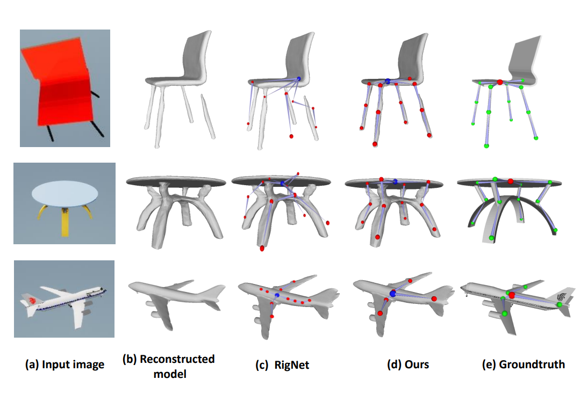

|
Ji Yang*
|
Xinxin
Zuo*
|
Sen
Wang
|
Zhenbo Yu
|
Given a single chair image, could we wake it up by reconstructing its 3D shape and skeleton, as well as animating its plausible articulations and motions, similar to that of human modeling?
It is a new problem that not only goes beyond image-based object reconstruction but also involves articulated animation of generic objects in 3D, which could give rise to numerous downstream augmented and virtual reality applications.
In this paper, we propose an automated approach to tackle the entire process of reconstruct such generic 3D objects, rigging and animation, all from single images.
A two-stage pipeline has thus been proposed, which specifically contains a multi-head structure to utilize the deep implicit functions for skeleton prediction. Two in-house 3D datasets of generic objects with high-fidelity rendering and annotated skeletons have also been constructed.
Empirically our approach demonstrated promising results; when evaluated on the related sub-tasks of 3D reconstruction and skeleton prediction, our results surpass those of the state-of-the-arts by a noticeable margin. Our code and datasets are made publicly available at the dedicated project website.
Paper
|
|
|
Object Wake-up: 3D Object Rigging from a Single Image
Ji Yang, Xinxin Zuo, Sen Wang, Zhenbo Yu, Xingyu Li, Bingbing Ni, Minglun Gong, Li
Cheng
ECCV, 2022
[Paper]
[Bibtex]
|
Visualization & Experiment Results
Reconstruction on Pix3D (Real Photo Images)
Visualization of image-based 3D reconstruction on the Pix3D dataset.
Our method shows excellent generalization performance on the real images.
Automatic Rigging from Ground Truth 3D Input
Visual comparison on skeleton prediction (automatic rigging).
The models come from the RigNetv1 dataset and our SSkel dataset.
Automatic Rigging from Estimated 3D Reconstruction

Visual results on articulated 3D models from input images.
Demo Video
Acknowledgements
This research was partly supported by the NSERC Discovery, CFI-JELF and UAHJIC grants. We also thank Priyal Belgamwar for her contribution to the dataset annotation.
This webpage template was borrowed from here.
|
{kind=link}